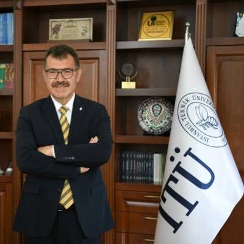
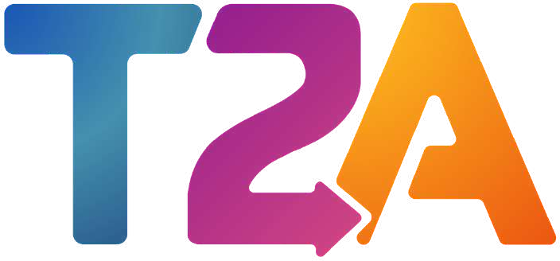

THINK2ACT SUNAR
Bir bilim insanının yolculuğu
HASAN
MANDAL
kimdir?
Prof. Dr. Hasan Mandal
TÜBİTAK Başkanı · 2018–2024

İTÜ Rektörü · 2024–
Onur
Listesi
TÜBİTAK Bilim Ödülü
Mühendislik bilimleri alanında
Stanford listesi
Dünyanın en etkili %2 bilim insanı arasında
Academia Europaea & TÜBA
Bilim akademilerinin üyesi
WAITRO Başkanı
Dünya Endüstriyel ve Teknolojik Araştırma Kuruluşları Birliği
T2A ÖZEL OTURUMU
21
Kasım 2026
Prof. Dr. Hasan Mandal ile
bilim, teknoloji ve girişimcilik üzerine bir söyleşi
ÜCRETSİZ · ÇEVRİMİÇİ
think2act.org · @think2actorg

ARŞİV · T2A